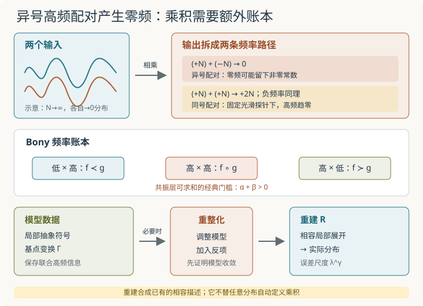

本页目录
基础衔接 19 · 分布乘积与重建：高频相撞以后，谁来决定低频？
先修：分布与弱导数、热核正则化与随机分布、奇异 SPDE。本讲先给出一个普通分布乘法必然失败的有限 Fourier 反例，再说明正则性条件、Wick 重整化和重建定理分别解决哪一层问题。它不是完整的奇异 SPDE 解理论。
两个对象各自都趋于零，乘积为什么能留下常数？
1. 一个不用概率的失败证书
在圆周 \(\mathbb T=[0,2\pi]\) 上，以下配对与空间均值均采用归一化测度 \(dx/(2\pi)\)。取固定振幅 \(A,B\) 与相位 \(\theta\)，定义
对任意光滑测试函数 \(\varphi\)，配对只读取 \(\varphi\) 的第 \(N\) 个 Fourier 系数；光滑性使该系数比任意负幂更快衰减。因此
但三角恒等式给出
第二项在分布意义趋于零，第一项却与 \(N\) 无关，所以
特别地，\(A=B=1\) 时，\(\theta=0\) 留下常数 \(1/2\)，\(\theta=\pi/2\) 则留下 0。每个因子都只告诉我们“极限是零分布”，却没有保留两列高频之间的相位关系；乘积正好会读取这份被单独极限遗忘的信息。
因此不存在一个在通常分布拓扑上连续、对光滑函数又等于点乘的双线性映射
覆盖所有分布。若它存在，连续性会迫使上面的乘积趋于 \(0\cdot0=0\)，与 \(\theta=0\) 的极限 \(1/2\) 矛盾。
这不是说任何两个分布都不能相乘。光滑函数可以乘分布；奇异支撑或波前方向满足额外条件时也可能定义乘积。结论是：只知道两个任意分布本身，通常不够决定它们的乘积。
2. 正则性账本：什么时候高频相撞仍可求和？
令 \(\mathcal C^\alpha=B_{\infty,\infty}^\alpha\) 表示 Hölder--Besov 空间。为避开零指标的端点细节，下面取 \(\alpha,\beta\ne0\)。用 Littlewood--Paley 块 \(\Delta_j\) 把频率约 \(2^j\) 的部分取出。\(f\in\mathcal C^\alpha\) 意味着典型估计
Bony 分解把光滑近似的乘积按频率相对大小拆成
\(f\prec g\) 收集“\(f\) 的低频乘 \(g\) 的高频”，\(f\succ g\) 相反；最危险的共振项 \(f\circ g\) 让相近高频相乘。第 \(j\) 层共振的量级约为
因此，若
共振层可以在分布拓扑中求和，乘积连续延拓为
这里采用 Besov--Zygmund 意义的 \(\mathcal C^\alpha\)；在整数指标处不要把它未经说明地替换成朴素的逐阶连续可导定义。条件 \(\alpha+\beta>0\) 是一条标准、方便的充分条件，不是所有特殊分布乘积的必要条件。
上一节的实余弦同时含 \(+N\) 与 \(-N\) 两个 Fourier 方向：异号配对 \(+N+(-N)\) 产生零频，同号配对产生 \(\pm2N\)。这不是离散采样中的混叠或“折回”。对任意 \(\rho<0\)，\(\|\cos Nx\|_{\mathcal C^\rho}\) 与 \(N^\rho\) 同阶并趋零，但平方的零频不消失。这与两份负正则性相加不能越过零的限制一致。临界等号 \(\alpha+\beta=0\) 一般也不由上述定理覆盖，不能用“差一个等号”跳过去。
3. 热核让近似可乘，却不自动决定极限
若 \(X\) 是上一讲的随机分布，固定 \(\epsilon>0\) 后
几乎必然光滑，所以普通平方 \(X_\epsilon^2\) 完全有定义。困难出现在 \(\epsilon\downarrow0\)：乘法不是分布拓扑上的连续运算，因而
并不能推出 \(X_\epsilon^2\) 收敛，更不能推出其极限只依赖 \(X\)。
对平稳中心 Gaussian 近似，记
若 \(C_\epsilon\) 发散，Wick 平方候选定义为
它满足点上均值为零，但这只处理了一次自收缩。要得到随机分布 \(:X^2:\)，仍须证明对测试函数或某个函数空间拓扑，\(:X_\epsilon^2:\) 是 Cauchy，并证明不同近似按所选重整化约定得到兼容极限。
反项也携带有限选择。若改用 \(C_\epsilon+c\)，则候选整体变成
若前者收敛到 \(Y\)，后者收敛到 \(Y-c\)。所以“减掉无穷大”不是完整规范；还要说明有限参数怎样校准。
4. 一个随机单壳层：减均值以后仍留下什么？
取两个独立标准 Gaussian \(\xi^c,\xi^s\)，在所有N之间共用这同一对随机系数，对每个整数 \(N\ge1\) 定义单一频率壳层
对每个光滑测试函数，\(Z_N\) 的配对趋零，所以 \(Z_N\to0\) 为随机分布意义下的逐测试函数 \(L^2(\Omega)\) 收敛。点方差却恒为
展开平方：
减去期望后，
与常数函数配对得到
它与 \(N\) 无关，均值为零、方差为 4。其余频率 \(2N\) 的两项对固定光滑测试函数趋零，因此
这个结论不只依赖一个测试函数：对任意 \(s<0\)，去掉剩余常数后，两个高频系数的二阶矩各为4，因而
这里的 \(H^s\) 包含零模。原场同样满足 \(E\lVert Z_N\rVert_{H^s}^2=2(1+N^2)^s\to0\)。所以两条极限均在完整 \(L^2(\Omega;H^s)\) 中成立。因子 \(Z_N\) 自身趋零，Wick 平方却留下随机常数。这个有限模型说明重整化会保留高频共振产生的低频随机信息；它不是一般 Gaussian 场 Wick 平方收敛的证明。

5. 重建定理不是“自动修好乘法”的按钮
本节只陈述欧氏各向同性缩放、紧集上的局部版本。正则性结构写作 \((A,T,G)\)：\(A\) 是同质次数集合，\(T=\bigoplus_{\zeta\in A}T_\zeta\) 存放抽象符号，\(G\) 负责把不同基点的展开重写到同一坐标。要求A含0、局部有限且有下界，每层 \(T_\zeta\) 是Banach空间，\(T_0\) 含单位符号；G中的变换保持最高同质项，只增添低阶项，并固定单位。有限上界以下只有有限多个同质次数可参与。
模型包含连续线性映射 \(\Pi_x:T\to\mathcal D'\) 和 \(\Gamma_{xy}\in G\)，满足
也就是说，\(\Gamma_{xy}\) 将以y为基点的描述改写到x。对单位范数 \(\tau\in T_\zeta\)，模型还须满足尺度估计
以及对 \(\beta<\zeta\)，
这些界对给定紧集、给定同质次数上界一致；一般τ由线性齐次性再乘其范数。这里
模型分布 \(F\) 不只是任意映射 \(x\mapsto T\)。若 \(F\in\mathcal D^\gamma\)，它取值于 \(T_{<\gamma}\)，各分量在紧集局部有界，而且必须满足局部展开相容性：对每个 \(\zeta<\gamma\)，
在紧集上一致成立。
重建定理的本页版本。 给定满足解析界的正则性结构与模型，若 \(\gamma>0\) 且 \(F\in\mathcal D^\gamma\)，则存在唯一连续线性重建算子
使对单位球内、足够多阶导数有统一界的测试函数 \(\varphi\)，
局部一致于 \(x\)。具体可取整数 \(r>\max(0,-\min A)\)，测试函数支撑在单位球且 \(C^r\) 范数≤1；常数依赖紧集、模型界与 \(F\) 的模型分布范数。定理还给出对模型和模型分布的连续依赖，这正是把正则化模型的收敛传递给重建分布所需的稳定性。
逻辑顺序不能倒置：先在抽象空间中定义允许的符号乘积、积分和模型，必要时重整化模型，并证明所得 \(F\) 满足相容估计；然后重建定理才把它变成普通分布。定理本身不为任意 \(u,v\in\mathcal D'\) 定义 \(uv\)，也不替代固定点、模型收敛或重整化常数的证明。
6. 用普通 Taylor 展开看见重建估计的原型
最简单的多项式模型只取符号 \(\mathbf1\)（次数 0）与 \(\mathbf X\)（次数 1），并令
对 \(f\in C^2\)，在每个基点放置一阶 jet
重写映射 \(\Gamma_{xy}\) 正是普通 Taylor 多项式的平移；Taylor 定理给出模型分布相容性。重建就是原函数
若 \(\varphi\) 支持在单位球、\(\|\varphi\|_{L^1}\le1\)，则
这就是 \(\lambda^2\) 重建误差的熟悉原型：局部线性描述在尺度 \(\lambda\) 上漏掉二阶余项。真正的正则性结构用噪声、积分与复合符号扩充这张 Taylor 账本，但仍必须检查基点之间的相容性。
7. 实验：分别检查频率共振与局部重建
下面两个实验分别检查频率混合与多项式重建。
频率混合。 控制 \(N\in[2,64]\)、\(A,B\in[0.5,2]\) 和相位 \(\theta\in[0,\pi]\)。图中画 \(u_N,v_N,u_Nv_N\) 的复Fourier系数绝对值，表格另给乘积零模的符号与v的正频复系数。相同幅值的点可重叠，幅值图不显示相位；频率路径在机制图中明确标出
并同时显示负频率的对称路径。这里没有离散采样混叠。界面显示单因子与常数测试函数的配对均为 0，而乘积均值为 \(AB\cos\theta/2\)。增大 \(N\) 不能让这项自动消失。
多项式重建。 取 \(f(y)=\cos y\)、基点 \(x=0\)，一阶 jet 为常数 1。控制观察尺度 \(\lambda\in[0.05,1]\)，显示窗口内最大误差
与通用 Taylor 上界 \(\lambda^2/2\)，并画出误差除以 \(\lambda^2\)。这只是多项式模型，不模拟随机模型、重整化群或 SPDE 固定点。
建议默认 \(N=8,A=B=1,\theta=0,\lambda=0.25\)。静态参照为
| 量 | 默认值 |
|---|---|
| \(\langle u_N,1\rangle\) 与 \(\langle v_N,1\rangle\) | \(0,0\) |
| \(\langle u_Nv_N,1\rangle\) | \(1/2\) |
| 乘积的 \(2N\) 频率振幅 | \(1/2\) |
| \(1-\cos(0.25)\) | \(0.031087578\) |
| \(\lambda^2/2\) | \(0.03125\) |
将 \(\theta\) 改成 \(\pi/2\) 时，乘积均值变为 0，但 \(2N\) 频率振幅仍为 \(1/2\)。将 \(N\) 增大只把振荡推向更高频，不改变零频系数。
无脚本后备：使用第一节乘积恒等式和第六节 Taylor 余项；默认数值见表。实验有限频率图不能证明一般 Besov 乘积定理，Taylor 小窗也不能证明一般重建定理。
8. 两道迁移题
题一。 取 \(A=2,B=3\)。分别令 \(\theta=0\) 与 \(\theta=\pi/3\)，求 \(u_Nv_N\) 的分布极限。为什么两题中每个因子的分布极限都不足以决定答案？
查看答案：丢失的是高频之间的相对相位
恒等式给
高频项在分布意义趋零。因此 \(\theta=0\) 时极限为常数 3；\(\theta=\pi/3\) 时极限为 \(3/2\)。两种情况下 \(u_N\to0\) 且 \(v_N\to0\)，所以单独极限都只给同一对 \((0,0)\)，没有记录相位。额外的联合近似或模型数据才决定共振低频。
题二。 对 \(f(y)=\cos y\)、基点 \(x=0\)，比较局部描述 \(F(0)=\mathbf1\) 与 \(\widetilde F(0)=0\) 对cos的配对误差。全零描述 \(\widetilde F(x)\equiv0\) 是否违反重建定理的相容条件？另考察 \(G(x)=\operatorname{sign}(x)\mathbf1\)，说明它在原点附近为何不属于任何正阶 \(\mathcal D^\gamma\)。
查看答案：描述哪个对象，与描述是否相容要分开
正确局部模型给
在 \(|y|\le\lambda\) 上成立，所以对 \(L^1\) 归一的缩放测试函数，配对误差至多 \(\lambda^2/2\)。
错误模型留下 \(\cos y-0\)。取非负、积分为 1 的测试函数，配对随 \(\lambda\downarrow0\) 趋于 1，不是 \(O(\lambda^\gamma)\)（任何 \(\gamma>0\)）。这说明零描述不能重建cos，却不说明它本身不相容：\(\widetilde F\equiv0\) 满足所有相容界，且 \(\mathcal R\widetilde F=0\)。重建定理不会猜出你另外想要的函数。
真正的相容失败可看G：取 \(x=h>0,y=-h\)，单位符号平移不变，故 \(\lVert G(h)-\Gamma_{h,-h}G(-h)\rVert_0=2\)。正阶相容界却要求它≤\(C(2h)^\gamma\to0\)，矛盾。局部描述是否能拼合，与它是否描述指定的cos，是两道不同检查。
9. 到奇异 SPDE 还缺哪些证明？
本讲已经区分四件事：经典乘积定理给出可直接相乘的正则性区；高频反例说明越界后普通连续延拓失败；指定近似与Wick约定，并证明增强对象收敛，才为特定Gaussian模型保留所需联合信息；重建定理把相容的抽象局部展开合成分布。
完整奇异 SPDE 仍需：选择适合方程缩放的正则性结构，构造并重整化随机模型，证明模型随平滑尺度收敛，在模型分布空间解固定点，最后用重建与稳定性得到实际解。有限余弦、单壳层 Gaussian 和 Taylor jet 分别核验机制，不能拼接成这些一般定理的证明。
速查与资料
高频乘高频会回落低频；\(\alpha+\beta>0\) 让经典共振级数可求和；Wick 排序指定随机收缩；模型保存被普通分布极限遗忘的联合信息；重建把相容局部展开变成普通分布，而不自动创造乘法。
抛物乘积与奇异方程的系统实现参见 Gubinelli、Imkeller、Perkowski 的 Paracontrolled distributions and singular PDEs；正则性结构、模型分布及重建定理的原始来源是 Hairer 的 A theory of regularity structures；随机模型与反项的背景见 Hairer 的 Renormalisation of parabolic stochastic PDEs。本讲有限 Fourier 与 Taylor 算例均在正文直接推导。资料核查：2026-09-09。